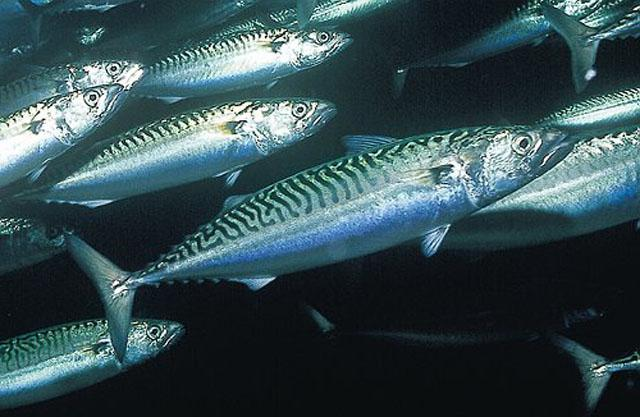
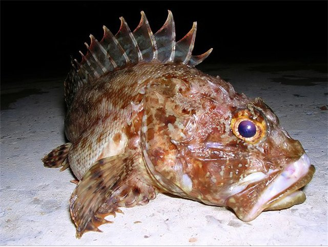
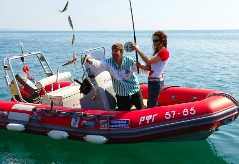
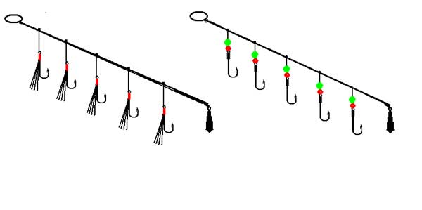
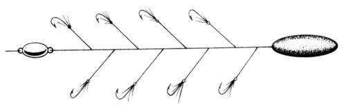
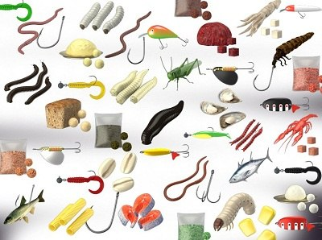

Информация к разделу
Рыбалка на черном море
В сезон отпусков на побережье Чёрного моря среди отдыхающих пользуется популярностью морская рыбалка. У распространителей билетов на экскурсии, "джиппинг", есть многочисленные предложения на морскую рыбалку в Чёрном море от владельцев различных судов, яликов, яхт, шлюпов и т.д.Все эти предложения под названием "морская рыбалка" подразумевают собой ловлю на классическую морскую снасть самодур.
Ловят на самодур в Чёрном море разную рыбу, в основном ставриду, селёдку, макрель. С вечера до утра вблизи берега в некоторых местах попадается кефаль.
Рыбы Чёрного моря:
- Ставрида
- Кефаль
- Макрель (скумбрия)
- Горбыль
- Сельдь
- Камбала
- Тригла
- Лаврак (лаврида) 
- Сарган
- Катран (черноморская акула)
- Барабулька (султанка)
- Смарида
- Ласкирь (морской карась)
- Зеленушка (лапина, губан)
- Бычки
- Морской дракончик (морской скорпион)
- Скорпена (морской ёрш)
При ловле рыбы в Чёрном море следует соблюдать осторожность, так, как у скорпены в спинном плавнике и у морского дракончика на жаберных крышках имеются ядовитые колючки, которые способны вызвать сильное воспаление.
Рыбаки эту рыбу Чёрного моря сначала оглушают колотушкой (а часто и просто шлепанцем), и колючки срезают ножницами. Если вы не уверены, какая рыба Чёрного моря попалась вам на крючок, то перед тем, как взять в руки, покажите её кому-нибудь из команды судна, на котором вы выехали на морскую рыбалку.
Самодур для ловли рыбы Чёрного моря
Самодур представляет собой снасть, напоминающую удочку для отвесного блеснения. Вот как будет выглядеть снасть, которую вам выдадут организаторы ловли рыбы Чёрного моря. Дешёвое телескопическое удилище китайского производства длиной от двух до пяти метров. На нём безынерционная катушка такого же качества. На катушку намотана леска 0,3-0,6мм.
К концу лески привязана "ставка" - отрезок более толстой лески с десятком хромированных крючков на 2-х сантиметровом поводке. На конце ставки привязано грузило от 50 грамм при ловле на мелководье и до 200-400 грамм в случае ловли на большой глубине и при сильном течении. Ловят без насадки, морская рыба принимает блестящие крючки за стаю мальков и атакует.
Из тех снастей, что вам выдают, выбирайте короткое удилище пожёстче. Сразу проверьте работу катушки. Из-за интенсивной эксплуатации катушки, не предназначенной для грузила такого веса, она часто выходят из строя. Вот как должен выглядеть в идеале самодур для ловли рыбы в Чёрном море.
Спиннинговое удилище 1,6 – 2,2 метра длиной с тестом до 100 грамм. Катушка лучше всего мультипликаторная. Можно использовать мощную безынерционную катушку, либо инерционную типа "Невской".
Основная леска - монофил 0,4 – 0,5 миллиметра, либо "плетёнка" соответствующей прочности. К концу лески привязать карабин с вертлюгом. За этот карабин крепится "ставка". Это отрезок лески 0,4 – 0,5 миллиметров длиной 1,2 метра. К концу лески привязывают грузило – конус весом 150 – 200 грамм.
К другом концу лески привязывают вертлюжок. С шагом в 10 сантиметров привязывают перпендикулярно основной леске "хитрым" узлом короткие (2-3 сантиметра) поводки с хромированными крючками с длинным цевьем №5 – 10 (в зависимости от размера предполагаемой рыбы).
Нужно сделать несколько запасных "ставок", чтобы в случае обрыва или запутывания не терять время на восстановление снасти.
Про ловлю рыбы в Чёрном море на самодур
Тактика ловли на самодур такова. Ловят на глубине 50 метров и больше. Леску стравливаете до тех пор, пока груз не коснётся морского дна. Затем удилище резко поднимаете на 1 метр вверх – делаете подсечку. После плавно опускаете вниз. Выдерживаете паузу 5-15 секунд, опять подсекаете, и так далее.
Если черноморская рыба не ловится со дна, есть смысл поискать её в толще воды. Поднимаете груз на метр – два от дна, и облавливаете этот участок воды. Если поклёвок не последовало, поднимаете ещё. Иногда, особенно ночью, стаи рыбы стоят прямо под днищем судна.
Если и это не приносит результат, попробуйте ловить на подмотку. Опускаете груз на дно, и подматываете леску на себя со средней скоростью, как на спиннинг. Ловить лучше всего утром или вечером. Днём в самую жару морская рыба питается плохо, да и вам не составит болВ августе – сентябре на Чёрном море хорошие результаты даёт ночная морская рыбалка.
На черноморскую морскую рыбалку с собой лучше взять наживку, которую насадить на крючки. Наживку нужно приготовить заранее. Всё же с наживкой на самодур в Чёрном море рыба ловится лучше, крупнее и разнообразнее.
Наживки для рыбы Чёрного моря:
Мясо мидий. Мидий можно насобирать в море на волнорезах, сваях, камнях. Рапан – это морской моллюск, раковины которых продаются во всех сувенирных магазинах Черноморского побережья. Добывают в море ныряя с маской на глубину не менее 4 метров.
Мелкие крабы. Их можно наловить у самого берега в камнях, волнорезах. Креветки (криль). Ловят сачком для ловли бабочек. Нужно знать место, где креветки обитают. Предпочтительно ловить на живых креветок. Хранят в банке с морской водой обязательно в тени. Воду нужно регулярно менять.
Морской червь офелия. Живёт в прибрежном песке. Отличная насадка для ловли любой черноморской рыбы. Место обитания морского червя можно узнать у местных жителей.
Морской червь нереис. Отличная насадка для ловли кефали. Добывают в мелких местах Чёрного моря с дном, покрытым слоем чёрного ила.
Кусочки рыбы. Используют при ловле хищной морской рыбы. Хлеб. На хлебные шарики ловят кефаль. Твистер. При ловле рыбы в Чёрном море на самодур полезно насадить на крючки мелкие твистера жёлтого цвета.